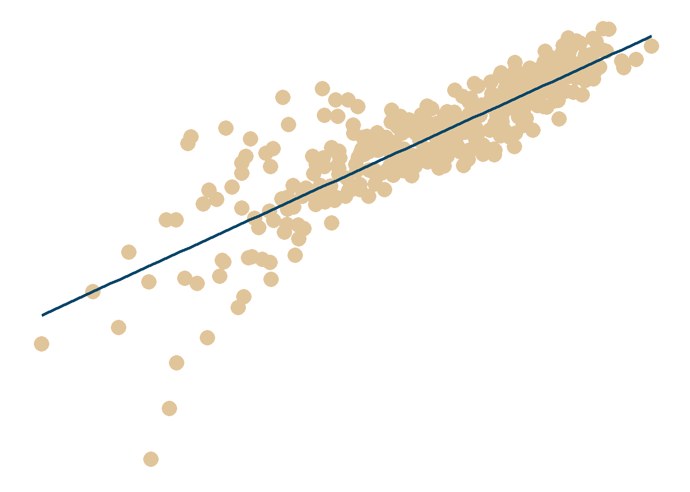

library(tidyverse) # untuk manupulasi, merapikan, & visualisasi data
library(gapminder) # untuk mengakses gapminder datasetscatter_plot_reg_line_df <- gapminder %>%
filter(continent == 'Europe')scatter_plot_reg_line <- scatter_plot_reg_line_df %>%
ggplot(aes(x = log(gdpPercap),
y = lifeExp)) +
geom_point(size = 5,
color = '#e1c59a') +
geom_smooth(method = 'lm',
se = FALSE,
color = '#094568') +
theme_minimal() +
theme(
axis.title = element_blank(),
axis.text = element_blank(),
axis.line = element_blank(),
panel.grid.major = element_blank(),
panel.grid.minor = element_blank(),
strip.text = element_blank(),
panel.background = element_rect(fill = '#FFFFFF',
color = NA),
plot.background = element_rect(fill = '#FFFFFF',
color = '#FFFFFF')
)